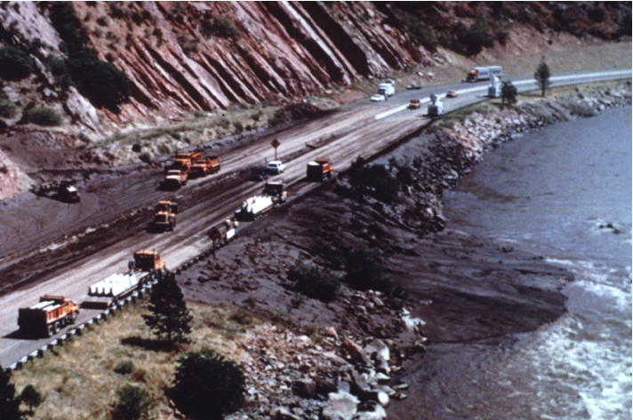

- Rapid mass movement of granular solid, water and air as a single phase system
- Steep slopes - unconsolidated staturated soils
- Velocity of flow - 3mph to 50 mph

Debris flow at Colorado (USGS,1997)
Debris flow at Colorado (USGS,1997)